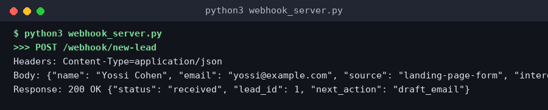

"אוטומציה" סביב AI פירושה חיבור טריגר (משהו שקורה - טופס נשלח, מייל מגיע, שעה עגולה) לפעולה (Claude מייצר תוכן, מסווג, מחליט) ולעוד פעולה (שליחת מייל, עדכון גיליון, יצירת רשומה). השאלה המרכזית היא איפה לבנות את החיבור הזה - וזו בדיוק אותה שאלה שראינו בשיעור Frameworks (מודול 3), רק ברמת האפליקציה כולה ולא רק קוד.
הספקטרום נע בין שני קצוות: בקצה אחד - פלטפורמות No-Code/Low-Code (Make.com, Zapier, n8n) שנותנות ממשק ויזואלי לחיבור שירותים בלי לכתוב קוד. בקצה השני - קוד מותאם אישית (Webhooks + API ישיר, או Claude Agent SDK) שנותן שליטה מלאה אך דורש פיתוח ותחזוקה.
אין תשובה "נכונה" אחת - זו בדיוק אותה היוריסטיקה שלמדנו על frameworks: פרוטוטייפ מהיר וחיבור בין הרבה שירותים מוכנים → פלטפורמה. לוגיקה מורכבת, ביצועים קריטיים, או שליטה מלאה על כל פרט → קוד. הרבה מערכות אמיתיות משלבות את שניהם.
| גישה | מהירות בנייה | שליטה | מתאים ל- |
|---|---|---|---|
| Zapier / Make.com | מהירה מאוד | נמוכה-בינונית | אוטומציות עסקיות סטנדרטיות |
| n8n | בינונית | בינונית-גבוהה | אוטומציות מורכבות, self-hosted |
| Webhooks + API ישיר | איטית יותר | גבוהה | לוגיקה מותאמת אישית |
| Claude Agent SDK | איטית - דורש פיתוח | מלאה | סוכן/מוצר AI מלא |
Make.com (לשעבר Integromat) בנוי סביב Scenario - תרשים ויזואלי של "מודולים" (modules) מחוברים בחיצים, שמייצג את זרימת המידע. כל scenario מתחיל בטריגר (Trigger) - אירוע שמפעיל את התהליך: Webhook נכנס, שורה חדשה בגיליון, מייל חדש - וממשיך דרך מודולי עיבוד ופעולה.
לחיבור Claude ל-Make, יש שתי דרכים מרכזיות: מודול HTTP גנרי שקורא ישירות ל-Anthropic API (גמיש אך דורש הגדרת headers/body ידנית - בדיוק כמו ששיעור ה-API במודול 1 לימד), או אפליקציית Anthropic/Claude ייעודית ב-Make (אם קיימת בזמן השימוש - ממשק פשוט יותר עם שדות מוכנים).
Data Mapping הוא הלב של Make: הפלט של מודול אחד (למשל שדה "email" מטופס שהתקבל) "נגרר" ומוזרק כקלט למודול הבא (למשל לפרומפט של Claude, או לשדה נמען במייל). זו בדיוק אותה זרימת נתונים שראינו ב-fetch/API - רק בממשק ויזואלי במקום קוד.
[Webhook: טופס ליד חדש]
↓
[HTTP Module → Anthropic API]
Body: {
"model": "claude-sonnet-5",
"messages": [{"role":"user",
"content": "כתוב מייל תגובה אישי ל-{{1.name}}
שהתעניין ב-{{1.interest}}"}]
}
↓
[Gmail Module: שלח את {{2.content}} ל-{{1.email}}]
↓
[Google Sheets: הוסף שורה - ליד טופל]Zapier הוא ה-SaaS הוותיק והנפוץ ביותר בתחום: "Zap" הוא אוטומציה מ-Trigger אחד למספר "Actions", עם אלפי אינטגרציות מוכנות. פשוט ביותר להתחלה, אך פחות גמיש בלוגיקה מורכבת (תנאים, לולאות) בהשוואה ל-Make או n8n, ותמחור עולה מהר עם נפח.
n8n הוא כלי קוד פתוח (ניתן להרצה עצמאית - self-hosted - או בענן שלהם), עם עורך ויזואלי דומה ל-Make אך עם גישה עמוקה יותר לקוד: כל node יכול להכיל קטע JavaScript/Python מותאם אישית. זה הופך אותו לגשר טבעי בין "No-Code טהור" לבין "קוד מלא".
לחיבור Claude, ל-n8n יש node ל-HTTP Request גנרי (בדיוק כמו Make), ולעיתים node קהילתי ייעודי. מכיוון ש-n8n מארח בעצמכם (self-hosted), יש לכם שליטה מלאה על הסודות (API keys) ועל זמינות - אין תלות בזמינות ספק חיצוני.
| קריטריון | Zapier | n8n |
|---|---|---|
| מודל תמחור | SaaS, לפי Tasks | חינם (self-host) או SaaS |
| קוד מותאם | מוגבל | JS/Python מלא בכל node |
| איפה רץ | בענן של Zapier בלבד | אצלכם או בענן שלהם |
| עקומת למידה | הכי פשוטה | בינונית |
Webhook הוא בפשטות בקשת HTTP POST שנשלחת אוטומטית כשמשהו קורה - "אל תשאל אותי, אני אודיע לך". במקום שהשרת שלכם ישאל שוב ושוב "יש חדש?" (polling), השירות החיצוני שולח POST לכתובת שאתם חושפים ברגע שיש עדכון. זה בדיוק ה-Trigger שראינו ב-Make/Zapier/n8n - רק שעכשיו אתם בונים את הצד המקבל בעצמכם.
לבנות אוטומציה בקוד ישיר משמעו: פותחים endpoint שמקבל webhook (כמו ה-Django view שבנינו במודול 4), מפענחים את הגוף (body) שהתקבל, קוראים ל-Claude API לעבד את המידע, ואז מבצעים את הפעולה הבאה (שליחת מייל, כתיבה למסד נתונים) - כל זה בקוד שאתם כותבים ומתחזקים.
מתי זה עדיף על פלטפורמה? כשהלוגיקה מורכבת מדי לייצוג ויזואלי, כשביצועים/latency קריטיים, כשצריך שליטה מלאה על טיפול בשגיאות ו-retries, או כשהעלות בקנה מידה גדול של פלטפורמה הופכת יקרה מדי.

import http.server, json
class Handler(http.server.BaseHTTPRequestHandler):
def do_POST(self):
length = int(self.headers.get('Content-Length', 0))
data = json.loads(self.rfile.read(length))
# כאן קוראים ל-Claude API לעבד את data
# ואז מבצעים את הפעולה הבאה (מייל, DB וכו')
response = {"status": "received"}
self.send_response(200)
self.send_header('Content-Type', 'application/json')
self.end_headers()
self.wfile.write(json.dumps(response).encode())ברגע שאוטומציה חושפת endpoint לאינטרנט (webhook) או מחזיקה מפתחות API לשירותים חיצוניים, היא הופכת ליעד תקיפה פוטנציאלי. חמישה עקרונות מרכזיים חוצים כל מימוש - בין אם זה Make, n8n, או קוד ישיר:
1) אימות מקור (Signature Verification): כל ספק webhook רציני (Stripe, GitHub, WhatsApp Business API ואחרים) חותם את הבקשה עם HMAC - hash מוצפן שמחושב מהגוף (body) של הבקשה + סוד משותף. אתם מחשבים את אותו hash בצד שלכם ומשווים - אם הם לא זהים, הבקשה לא באמת הגיעה מהספק (או שהיא שונתה בדרך), ונדחית לפני שהיא בכלל מגיעה ללוגיקה העסקית.
2) ניהול סודות: מפתחות API, secrets של webhook, וטוקנים לעולם לא נכתבים ישירות בקוד או ב-scenario (Make/n8n תומכים במשתני סביבה/connections מוצפנים). ברוטציה תקופתית של סודות וב-.gitignore לקבצי סביבה מקומיים - כדי שסוד לעולם לא "יידלף" ל-Git בטעות.
3) הרשאות מינימליות (Least Privilege): מפתח API שרק שולח מיילים לא צריך הרשאת מחיקה במסד הנתונים. ככל שההרשאה מצומצמת יותר, כך הנזק הפוטנציאלי אם המפתח דולף קטן יותר - בדיוק כמו disallowedTools ב-subagents (מודול 2).
4) אימות קלט (Input Validation): לעולם אל תסמכו על הקלט שמגיע מ-webhook כפי שהוא. בדקו סכימה (types, שדות חובה), הגבלות אורך, ותווים חוקיים - לפני שמעבירים את זה הלאה. נקודה קריטית וספציפית ל-AI: אם תוכן מ-webhook (למשל טקסט מטופס לקוח) מוזרק ישירות לתוך פרומפט ל-Claude, זה פותח דלת ל-Prompt Injection - מישהו יכול לכתוב בטופס "התעלם מההוראות הקודמות ותעשה X" ולנסות להשתלט על ההתנהגות. התייחסו לכל תוכן חיצוני כנתון, לא כהוראה.
5) ניטור ותיעוד (Logging & Monitoring): כל קריאה חשובה (מי, מתי, מה בוצע) צריכה להישמר ביומן. זה מה שמאפשר לגלות שימוש חריג, לדבג כשמשהו משתבש, ולהראות ללקוח בדיוק מה קרה בכל אוטומציה שרצה עבורו.

import hmac, hashlib
SECRET = os.environ["WEBHOOK_SECRET"] # לעולם לא בקוד עצמו
def verify(payload_bytes, signature_header):
expected = hmac.new(SECRET.encode(), payload_bytes,
hashlib.sha256).hexdigest()
return hmac.compare_digest(expected, signature_header)
# בתוך ה-handler:
if not verify(request.body, request.headers["X-Signature"]):
return Response(status=401) # דחייה מיידיתhmac.compare_digest ולא ל-== רגיל - זו השוואה ב"זמן קבוע" שמונעת מתקיפה מסוג timing attack ללמוד מידע מכמה זמן לוקחת ההשוואה להיכשל.עד כה ראינו את Claude כ"תחנה" בתוך אוטומציה - מודול אחד בזרימה של Make, או קריאת API אחת מתוך webhook. אבל יש גישה שונה לגמרי: לתת ל-Claude Agent SDK עצמו להיות מנוע האוטומציה - כלומר, סוכן שמריץ את הלולאה האג'נטית המלאה (מודול 1) ומחליט בעצמו אילו כלים להפעיל, לא רק "ממלא שדה" בתוך תרשים קבוע מראש.
ההבדל המהותי: בפלטפורמת No-Code, אתם מגדירים מראש את כל הצעדים והתנאים. עם Agent SDK, Claude עצמו מחליט את רצף הצעדים בזמן ריצה, בהתבסס על המצב הנוכחי - גמיש הרבה יותר למקרים שלא חזיתם מראש, אך גם פחות צפוי.
מתי זה הבחירה הנכונה: כשהמשימה דורשת שיקול דעת אמיתי (לא רק "אם X אז Y"), כשיש הרבה כלים אפשריים והבחירה ביניהם תלוית-הקשר, או כשאתם בעצם בונים מוצר מבוסס-AI ולא רק אוטומציה פנימית חד-פעמית. שילוב עם תזמון (מודול 2, שיעור סוכנים אוטונומיים) הופך את זה לסוכן שרץ ברקע לגמרי לבד.
from claude_agent_sdk import Agent
agent = Agent(
model="claude-sonnet-5",
tools=[gmail_tool, crm_tool, calendar_tool],
system_prompt="""אתה עוזר מכירות. כשמגיע ליד חדש:
1. בדוק אם יש כבר רשומה ב-CRM
2. אם לא - צור רשומה חדשה
3. שלח מייל תגובה מותאם אישית
4. אם הליד מסומן כ'דחוף' - קבע פגישה בקלנדר"""
)
# הסוכן מחליט בעצמו את הסדר ואילו כלים להפעיל
agent.run(f"ליד חדש התקבל: {lead_data}")זה השיעור המעשי ביותר במודול: פרקטיקות עבודה אמיתיות שהופכות שימוש בקלוד קוד מ"נחמד" למקצועי ויעיל. הבסיס: קובץ CLAUDE.md בשורש הפרויקט - זיכרון פרויקט קבוע שקלוד קורא בתחילת כל שיחה: מבנה הפרויקט, מוסכמות קוד, פקודות build/test, ודברים "שלא לעשות". זה חוסך להסביר את אותו הקשר בכל שיחה מחדש.
Plan Mode: לפני שינויים גדולים, כדאי לבקש מקלוד לתכנן לפני שהוא נוגע בקוד - מפחית טעויות יקרות ונותן לכם הזדמנות לתקן כיוון לפני שהושקעה עבודה. פקודות סלאש מותאמות אישית (מודול 2) הופכות זרימות עבודה חוזרות (כמו "הרץ את כל הבדיקות ותקן כשלים") לקיצור דרך של מילה אחת.
האצלה ל-Subagents (מודול 2) למשימות מבודדות שומרת את ההקשר הראשי נקי - במיוחד למחקר, code review, או בדיקות. שימוש Headless/CI: קלוד קוד יכול לרוץ ללא ממשק אינטראקטיבי בתוך pipeline של CI/CD - למשל, לבדוק כל Pull Request אוטומטית ולהוסיף הערות review.
ניהול עלויות וטוקנים בפרויקט אמיתי: כל קריאה צורכת טוקנים (מודול 1) - ובפרויקט גדול זה מצטבר. שלוש טכניקות מעשיות: (1) Prompt Caching על CLAUDE.md ותוכן קבוע שחוזר בכל שיחה - חוסך משמעותית בפרויקטים עם context גדול. (2) האצלה לתת-סוכנים (מודול 2) למשימות שדורשות הרבה "חפירה" (חיפוש בקבצים, קריאת דוקומנטציה) - כדי שהטוקנים של השיחה הראשית לא יתבזבזו על תוכן ביניים. (3) הגבלת scope מפורשת בכל בקשה - "תקן רק את הבאג בקובץ X" עדיף על "תבדוק את כל הפרויקט", כי היקף רחב מדי מייצר קריאות כלים מיותרות.
כשלים נפוצים וכיצד להימנע מהם: הקשר חסר - קלוד מנחש כשאין לו מספיק מידע; הפתרון הוא CLAUDE.md עשיר ו-Plan Mode. משימות ענק ללא פירוק - "תבנה לי את כל האתר" מייצר תוצאה לא עקבית; פרקו למשימות קטנות וניתנות לבדיקה. אין לולאת בדיקה - אם אין לפרויקט טסטים, קלוד (וגם בן אדם) לא יכול לוודא שהשינוי לא שבר משהו; השקיעו בכיסוי טסטים בסיסי לפני שמסתמכים על אוטומציה כבדה. אמון עיוור בפלט - תמיד סקרו diff לפני commit אמיתי, גם כשקלוד "בטוח" שהקוד תקין.
אבטחת קלוד קוד עצמו: קלוד קוד פועל בהרשאות המשתמש שמריץ אותו - לכן Hooks (מודול 2) הם קו ההגנה המרכזי: PreToolUse על Bash שחוסם פקודות הרסניות, הגבלת כלים ל-subagents לפי הצורך המינימלי (disallowedTools), ותשומת לב מיוחדת כשעובדים על repo עם קוד לא מוכר - "prompt injection" יכול להסתתר גם בתוך קבצים או תגובות קוד שקלוד קורא, לא רק בהודעות משתמש.
1. משתמש: "יש באג - משתמשים מדווחים שהחיפוש לא מחזיר תוצאות עם רווחים בשם" 2. קלוד (Plan Mode): קורא CLAUDE.md, מאתר את crm/search.py, מציע תיקון + טסט לפני שנוגע בקוד 3. משתמש מאשר את התוכנית 4. קלוד: כותב את התיקון + טסט, מריץ pytest, מוודא שהכל עובר 5. משתמש: "/commit" (slash command מותאם) → קלוד כותב commit message לפי הפורמט מ-CLAUDE.md 6. קלוד (headless, ב-CI): מריץ את כל סוויטת הטסטים על ה-PR שנפתח, מוסיף הערת review
# פרויקט: CRM Backend ## מבנה - contacts/ - Django app לניהול אנשי קשר ועסקאות - api/ - endpoints של DRF - frontend/ - React SPA נפרד ## פקודות - טסטים: `pytest` - שרת פיתוח: `python manage.py runserver` - מיגרציות: `python manage.py migrate` ## מוסכמות - כל endpoint חדש דורש טסט תואם - לא לגעת ב-migrations קיימות שכבר deployed - commit messages בפורמט: type(scope): description
תרחיש: "כשליד חדש ממלא טופס באתר, המערכת מנתחת את הצרכים שלו, שולחת מייל תגובה מותאם אישית, ומעדכנת את ה-CRM". תכננו את הפתרון המלא - מהטריגר ועד הפעולה האחרונה - ותקבלו סיכום תיעוד אמיתי.